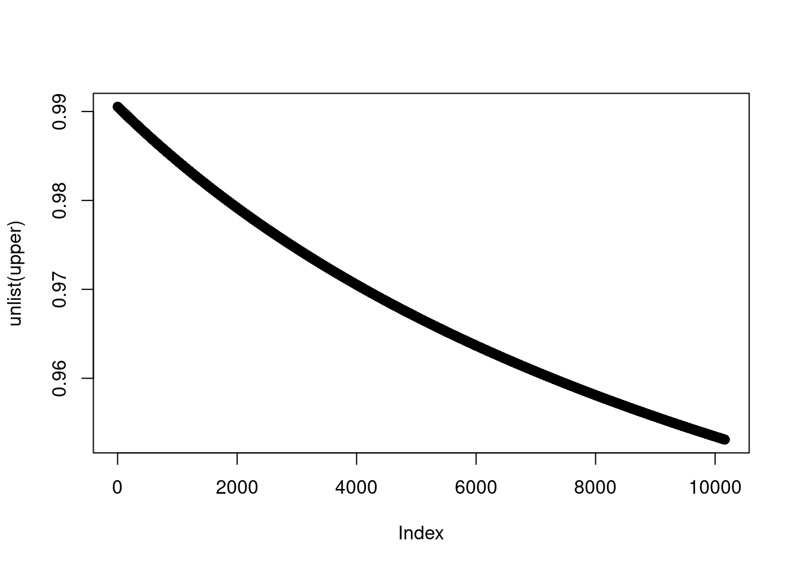

Chapter 4 Dose Response Model
4.1 Exposure (Dose) and Health
trace.e <- seq(1,50, by=0.1)
#normal range = 15~35
trace.e.h=function (x) {
ifelse(x<20, 1/(1+exp(-x+10)),
ifelse(x<30, rnorm(1, 1/(1+exp(-19)), 0.01), 1/(1+exp(-19))-1/(1+exp(40-x))
)
)
}
hstatus<-trace.e.h(trace.e)+rnorm(length(trace.e), 1, 0.1)
plot(trace.e, hstatus, cex=0.1, col='grey' , ylab='Function', xlab='Biological Element', family='A')
rect(-1, -1, 7, 3,
border = "transparent", col=rgb(0,0,0,alpha=0.3) )
rect(7, -1, 15, 3,
border = "transparent", col=rgb(0,0,0,alpha=0.2) )
rect(15, -1, 35, 3,
border = "transparent", col=rgb(0,0,0,alpha=0.1) )
rect(35, -1, 43, 3,
border = "transparent", col=rgb(0,0,0,alpha=0.2) )
rect(43, -1, 55, 3,
border = "transparent", col=rgb(0,0,0,alpha=0.3) )
text('Death', x=3,y=1.3, col='red', cex=0.7, family='A')
text('Disease', x=10,y=1.5, col='black', cex=0.7)
text('Normal function', x=25,y=1.7, col='blue', cex=0.7)
text('Disease', x=38,y=1.5, col='black', cex=0.7)
text('Death', x=47,y=1.3, col='red', cex=0.7)
##실습 1: Disease graph 그리기
par(mfrow = c(1,1))
disease <- -1*hstatus+5
exp.b <- -1*trace.e +50
plot(exp.b, disease, cex=0.5, col='orange' , ylab='Disease', xlab='Biomarker', family='A')
rect(-2, -1, 7, 5,
border = "transparent", col=rgb(0,0,0,alpha=0.3) )
rect(7, -1, 15, 5,
border = "transparent", col=rgb(0,0,0,alpha=0.2) )
rect(15, -1, 35, 5,
border = "transparent", col=rgb(0,0,0,alpha=0.1) )
rect(35, -1, 43, 5,
border = "transparent", col=rgb(0,0,0,alpha=0.2) )
rect(43, -1, 55, 5,
border = "transparent", col=rgb(0,0,0,alpha=0.3) )
text('Death', x=3,y=3.7, col='red', cex=1, family='A')
text('Disease', x=10,y=3.5, col='black', cex=1)
text('Normal function', x=25,y=3.3, col='blue', cex=1)
text('Disease', x=38,y=3.5, col='black', cex=1)
text('Death', x=47,y=3.7, col='red', cex=1)
4.2 community base cohort study
par(mfrow = c(1,1))
disease <- -1*hstatus+5
exp.b <- -1*trace.e +50
plot(exp.b, disease, cex=1.5, col='orange' , ylab='Disease', xlab='Biomarker', family='A')
rect(-2, -1, 7, 5,
border = "transparent", col=rgb(0,0,0,alpha=0.3) )
rect(7, -1, 15, 5,
border = "transparent", col=rgb(0,0,0,alpha=0.2) )
rect(15, -1, 35, 5,
border = "transparent", col=rgb(0,0,0,alpha=0.1) )
rect(35, -1, 43, 5,
border = "transparent", col=rgb(0,0,0,alpha=0.2) )
rect(43, -1, 55, 5,
border = "transparent", col=rgb(0,0,0,alpha=0.3) )
text('Death', x=3,y=3.7, col='red', cex=2, family='A')
text('Disease', x=10,y=3.5, col='black', cex=2)
text('Normal function', x=25,y=3.3, col='blue', cex=2)
text('Disease', x=38,y=3.5, col='black', cex=2)
text('Death', x=47,y=3.7, col='red', cex=2)
## short term follow up
rect(-2,-2, 40, 6, col=rgb(1, 1, 0, alpha=0.2), border = "transparent")
text('Short term follow up', x=10,y=3.8, col='purple', cex=1)
arrows(0,3.7, 40, 3.7, code=3)
### long term follow up
rect(10,-2, 50, 6, col=rgb(0, 1, 1, alpha=0.2), border = "transparent")
text('long term cumulative exposure', x=30,y=4.1, col='purple', cex=1)
arrows(10,4, 50, 4, code=3)
##1.1 sigmoid curve
dose.e<- -5:5
resp<-1/(1+exp(-dose.e))
plot(dose.e, resp)#S(x) = 1/(1+e^-x)
sigmoid.f=function(x) {
1/(1+exp(-x))
}
x<-seq(-5, 10, 0.1)
plot(x, sigmoid.f(x), col='grey', main="sigmoid function")x<-seq(-5, 10, 0.1)
y<-sigmoid.f(x)+rnorm(length(x), mean=0, sd=0.1)
plot(x,y, col='grey',main="Sigmoid curve")
lines(x, sigmoid.f(x), col='red')
abline(h=0.5, lty=2)
x[which(sigmoid.f(x)==0.5)]## [1] 0x[which( sigmoid.f(x) >0.48 & sigmoid.f(x) < 0.52)]## [1] 0abline(v=0, lty=2)
text('LD50', x=1, cex=2)
arrows(1,0.9, 0,0.5, lty=1, lwd=0.1, angle=10, code=2, length=0.2)
########linear regression
mod1<-glm(y ~ x)
pred1<-predict(mod1)
lines(x, pred1, col='blue')
x[which(pred1 >0.498 & pred1 <0.51)]## [1] 0.4 0.5text('LD50 by linear regression', x=5, y=0.1, cex=3)
arrows(1,0.2, 0.7,0.5, lty=1, lwd=0.1, col='red',angle=10, code=2, length=0.2, cex=2)############ 3차방정식으로 풀어보기 (실습)
mod2 <-glm(y~poly(x,3))
###어떤 모델이 더 피팅이 잘되냐에 대한 토론
# high dose exposure data and low dose prevention
plot(x, y)set.seed(0)
dose <- seq(0,10, 0.01)
pb<-c(rnorm(500, 0, 0.001), rnorm(300, 0, 0.01), rnorm(100, 0.1, 0.05),rnorm(101, -0.1, 0.05))
resp <-1/(1+exp(-(dose-5)))+rnorm(length(dose), 0, 0.1)+pb
plot(dose, resp, xlab='Dose', ylab='Response', cex.lab=1.5, cex.axis=1.5, cex.main=1.5, cex.sub=1.5)
rect(7, -1, 12, 2,
border = "transparent", col=rgb(0,0,0,alpha=0.3) )
cohort<-data.frame(dose, resp, pb)
########s1 early cohort study
s1c <-cohort[dose>7,]
#plot(s1c$dose, s1c$resp)
s1m1<-glm(data=s1c, resp ~ poly(dose, 3))
spred1<-predict(s1m1)
lines(s1c$dose, predict(s1m1), col='red', lwd=5 )
######s2 well structured cohort study
s2c<-cohort[dose>4 ,]
#plot(s2c$dose, s2c$resp, xlim=c(0,10))
s2m1<-lm(data=s2c, resp ~ poly(dose, 1))
s2m2<-lm(data=s2c, resp ~ poly(dose, 2))
s2m3<-lm(data=s2c, resp ~ poly(dose, 3))
s2m4<-lm(data=s2c, resp ~ poly(dose, 4))
anova(s2m1, s2m2, s2m3, s2m4)## Analysis of Variance Table
##
## Model 1: resp ~ poly(dose, 1)
## Model 2: resp ~ poly(dose, 2)
## Model 3: resp ~ poly(dose, 3)
## Model 4: resp ~ poly(dose, 4)
## Res.Df RSS Df Sum of Sq F Pr(>F)
## 1 598 16.6208
## 2 597 8.8023 1 7.8185 557.7477 < 2.2e-16 ***
## 3 596 8.3542 1 0.4481 31.9636 2.44e-08 ***
## 4 595 8.3407 1 0.0135 0.9661 0.3261
## ---
## Signif. codes: 0 '***' 0.001 '**' 0.01 '*' 0.05 '.' 0.1 ' ' 1fit.s3m<-s2m3
s2pred3<-predict(fit.s3m)
lines(s2c$dose, s2pred3, col='blue', lwd=3)
abline(h=0.5, lty=2, col='red')
s2c$dose[which(s2pred3 >0.498 & s2pred3 <0.501)]## [1] 5.02 5.03#s2c$dose[which(s2pred1 >0.498 & s2pred1 <0.501)]
text('LD50=5.02', x=7, y=0.1, col='red', cex=3)
arrows(6,0.2, 4.98,0.5, lty=1, lwd=0.1, col='red',angle=10, code=2, length=0.2)
#######실습.
s3c<-cohort[dose>4 &dose<8,]
s3m1<-lm(data=s3c, resp ~ poly(dose, 1))
s3m2<-lm(data=s3c, resp ~ poly(dose, 2))
s3m3<-lm(data=s3c, resp ~ poly(dose, 3))
s3m4<-lm(data=s3c, resp ~ poly(dose, 4))
anova(s3m1, s3m2, s3m3, s3m4)## Analysis of Variance Table
##
## Model 1: resp ~ poly(dose, 1)
## Model 2: resp ~ poly(dose, 2)
## Model 3: resp ~ poly(dose, 3)
## Model 4: resp ~ poly(dose, 4)
## Res.Df RSS Df Sum of Sq F Pr(>F)
## 1 397 5.0981
## 2 396 4.4345 1 0.66360 59.6286 9.557e-14 ***
## 3 395 4.3852 1 0.04930 4.4299 0.03595 *
## 4 394 4.3848 1 0.00039 0.0347 0.85224
## ---
## Signif. codes: 0 '***' 0.001 '**' 0.01 '*' 0.05 '.' 0.1 ' ' 1fit.s3m<-s3m2
s3pred2<-predict(s3m2)
lines(s3c$dose, s3pred2, col='black', lwd=3)
abline(h=0.5, lty=2, col='red')
s3c$dose[which(s3pred2 >0.498 & s3pred2 <0.501)]## [1] 4.96#s2c$dose[which(s2pred1 >0.498 & s2pred1 <0.501)]
text('LD50=4.96', x=2, y=1, col='black', cex=3)
arrows(2,0.95, 4.96,0.5, lty=1, lwd=3, col='black',angle=10, code=2, length=0.2)######전체 자료 실습
s4c<-cohort[dose<8,]
plot(s4c$dose, s4c$resp, xlim=c(0,10), col='grey')
s4m1<-lm(data=s4c, resp ~ poly(dose, 1))
s4m2<-lm(data=s4c, resp ~ poly(dose, 2))
s4m3<-lm(data=s4c, resp ~ poly(dose, 3))
s4m4<-lm(data=s4c, resp ~ poly(dose, 4))
s4m5<-lm(data=s4c, resp ~ poly(dose, 5))
s4m6<-lm(data=s4c, resp ~ poly(dose, 6))
s4m7<-lm(data=s4c, resp ~ poly(dose, 7))
s4m8<-lm(data=s4c, resp ~ poly(dose, 8))
s4m9<-lm(data=s4c, resp ~ poly(dose, 9))
anova(s4m1, s4m2, s4m3, s4m4, s4m5, s4m6, s4m7, s4m8, s4m9)## Analysis of Variance Table
##
## Model 1: resp ~ poly(dose, 1)
## Model 2: resp ~ poly(dose, 2)
## Model 3: resp ~ poly(dose, 3)
## Model 4: resp ~ poly(dose, 4)
## Model 5: resp ~ poly(dose, 5)
## Model 6: resp ~ poly(dose, 6)
## Model 7: resp ~ poly(dose, 7)
## Model 8: resp ~ poly(dose, 8)
## Model 9: resp ~ poly(dose, 9)
## Res.Df RSS Df Sum of Sq F Pr(>F)
## 1 798 14.1986
## 2 797 10.4872 1 3.7114 354.1703 < 2.2e-16 ***
## 3 796 9.0810 1 1.4062 134.1909 < 2.2e-16 ***
## 4 795 8.3462 1 0.7348 70.1227 2.528e-16 ***
## 5 794 8.3290 1 0.0171 1.6358 0.20128
## 6 793 8.2936 1 0.0354 3.3825 0.06627 .
## 7 792 8.2891 1 0.0045 0.4327 0.51084
## 8 791 8.2786 1 0.0105 1.0030 0.31689
## 9 790 8.2784 1 0.0001 0.0121 0.91226
## ---
## Signif. codes: 0 '***' 0.001 '**' 0.01 '*' 0.05 '.' 0.1 ' ' 1s4pred5<-predict(s4m4)
s4pred1<-predict(s4m1)
lines(s4c$dose, s4pred5, col='red', lty=2, lwd=2)
lines(s4c$dose, s4pred1, col='blue', lty=2, lwd=2)
abline(h=0.5, lty=2, col='red')
abline(h=0.2, lty=2, col='red')
abline(h=0.8, lty=2, col='red')
s4c$dose[which(s4pred5 >0.499 & s4pred5 <0.501)]## [1] 5.06s4c$dose[which(s4pred1 >0.499 & s4pred1 <0.501)]## [1] 4.83text('LD50=5.06', x=7, y=0.1, col='red', cex=2)
text('LD50=4.83', x=2, y=0.6, col='blue', cex=2)
##########sigmoid function fitting
sigmoid.f=function(x) {
1/(1+exp(-x))
}
sx<-sigmoid.f(s4c$dose)
ss.f=function(x){ poly(x,5)}
#mod.sig <-lm(data=s4c, resp~ss.f(dose))
mod.sig <-lm(data=s4c, resp~sigmoid.f(dose-5))
anova(s4m1, s4m2, s4m3, s4m4, s4m5,mod.sig)## Analysis of Variance Table
##
## Model 1: resp ~ poly(dose, 1)
## Model 2: resp ~ poly(dose, 2)
## Model 3: resp ~ poly(dose, 3)
## Model 4: resp ~ poly(dose, 4)
## Model 5: resp ~ poly(dose, 5)
## Model 6: resp ~ sigmoid.f(dose - 5)
## Res.Df RSS Df Sum of Sq F Pr(>F)
## 1 798 14.1986
## 2 797 10.4872 1 3.7114 353.8002 < 2.2e-16 ***
## 3 796 9.0810 1 1.4062 134.0507 < 2.2e-16 ***
## 4 795 8.3462 1 0.7348 70.0495 2.597e-16 ***
## 5 794 8.3290 1 0.0171 1.6341 0.2015
## 6 798 8.3370 -4 -0.0079 0.1884 0.9445
## ---
## Signif. codes: 0 '***' 0.001 '**' 0.01 '*' 0.05 '.' 0.1 ' ' 1pred.sig<-predict(mod.sig)
lines(s4c$dose, pred.sig, col='grey', lwd=20)
lines(s4c$dose, s4pred5, col='red', lty=2, lwd=2)
###### generalized additive model 실습
library(gam)## Loading required package: splines## Loading required package: foreach## Loaded gam 1.20gam.m <-gam(data=s4c, resp~s(dose, 20))
gg<-predict(gam.m)
lines(s4c$dose, gg, col='purple', lwd=2)#########################################
# summary ###########################3333
# Take home message ####################
#1. high dose exposure cohort: there might be no dose-response relationship (high SMR but no linear relationship)
#2. moderate dose exposure cohort: there were dose-response relationship, healthy worker effect could attenuate those relationship
#3. all dose exposure cohort: there were dose-response relationship, and can control healthy worker effect
# Over or Underestimation of LD50 can be occured during model selection steps.
# Best model is not reperesentor of real world, because data generally squared by health worker effect.
######### 변수들을 조정에 자유도를 높여보자.
#customized function...